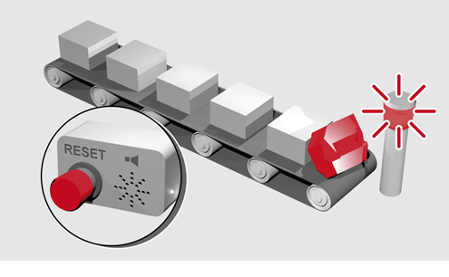
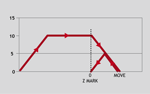
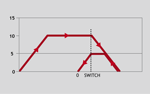
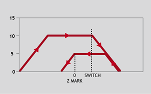

Axis Command
DATUM(sequence)
Performs one of 6 homing sequences to locate an axis to an absolute position. The creep speed used in the sequences is set using CREEP and the programmed speed is set with the SPEED command. When the datum sequence has been completed, the axis will be at the home position in the case of functions 3 and 4, or will stop a small distance after the home position when using functions 1, 2, 5 or 6.
DATUM(0) and DATUM(7) are special cases that will reset the motion system after an axis critical error. It leaves the positions in DPOS and MPOS unchanged.
|
Sequence |
Description |
||||||||||
|
0 |
DATUM(0) clears the following error exceeded FE_LIMIT condition for ALL axes by setting these bits in AXISSTATUS to zero:
|
||||||||||
|
1 |
The axis moves at creep speed forward till the Z marker is encountered. The Measured position is then reset to zero and the Demand position corrected so as to maintain the following error. |
||||||||||
|
2 |
The axis moves at creep speed in reverse till the Z marker is encountered. The Measured position is then reset to zero and the Demand position corrected so as to maintain the following error. |
||||||||||
|
3 |
The axis moves at the programmed speed forward until the datum switch is reached. The axis then moves backwards at creep speed until the datum switch is reset. The Measured position is then reset to zero and the Demand position corrected so as to maintain the following error. |
||||||||||
|
4 |
The axis moves at the programmed speed reverse until the datum switch is reached. The axis then moves at creep speed forward until the datum switch is reset. The Measured position is then reset to zero and the Demand position corrected so as to maintain the following error. |
||||||||||
|
5 |
The axis moves at programmed speed forward until the datum switch is reached. The axis then reverses at creep speed until the datum switch is reset. It then continues in reverse at creep speed looking for the Z marker on the motor. The Measured position where the Z input was seen is then set to zero and the Demand position corrected so as to maintain the following error. |
||||||||||
|
6 |
The axis moves at programmed speed reverse until the datum switch is reached. The axis then moves forward at creep speed until the datum switch is reset. It then continues forward at creep speed looking for the Z marker on the motor. The Measured position where the Z input was seen is then set to zero and the Demand position corrected so as to maintain the following error. |
||||||||||
|
7 |
Clear AXISSTATUS error bits for the BASE axis only. Otherwise the action is the same as DATUM(0). |
The datuming input set with the DATUM_IN which is active low so is set when the input is OFF . This is similar to the FWD , REV and FHOLD inputs which are designed to be “fail-safe”.
DATUM(0) and DATUM(7) will not reset the “Remote drive comms error” or the “Remote drive error” bits if the underlying error is still present.
DATUM(1) and DATUM(2) use the registration trigger to capture the Z position accurately. The axis decelerates to a stop AFTER the Z position with the 0 at the Z.
When using remote axes such as EtherCAT, the drive PDO profile must include the touch probe to enable DATUM functions 1, 2, 5 and 6 to work.
A production line is forced to stop if something jams the product belt, this causes a motion error. The obstacle has to be removed, then a reset switch is pressed to restart the line.

FORWARD 'start production line
WHILE IN(2)=ON
IF MOTION_ERROR=0 THEN
OP(8,ON) 'green light on; line is in motion
ELSE
OP(8, OFF)
GOSUB error_correct
ENDIF
WEND
CANCEL
STOP
error_correct:
REPEAT
OP(10,ON)
WA(250)
OP(10,OFF) 'flash red light to show crash
WA(250)
UNTIL IN(1)=OFF
DATUM(0) 'reset axis status errors
SERVO=ON 'turn the servo back on
WDOG=ON 'turn on the watchdog
OP(9,ON) 'sound siren that line will restart
WA(1000)
OP(9,OFF)
FORWARD 'restart motion
RETURN
An axis requires its position to be defined by the Z marker. This position should be set to zero and then the axis should move to this position. Using the datum 1 the zero point is set on the Z mark, but the axis starts to decelerate at this point so stops after the mark. A move is then used to bring it back to the Z position.

SERVO=ON
WDOG=ON
CREEP=1000 'set the search speed
SPEED=5000 'set the return speed
DATUM(1) 'register on Z mark and sets this to datum
WAIT IDLE
MOVEABS (0) 'moves to datum position
A machine must home to its limit switch which is found at the rear of the travel before operation. This can be achieved through using DATUM(4) which moves in reverse to find the switch.

SERVO=ON
WDOG=ON
REV_IN=-1 'temporarily turn off the limit switch function
DATUM_IN=5 'sets input 5 for registration
SPEED=5000 'set speed, for quick location of limit switch
CREEP=500 'set creep speed for slow move to find edge of switch
DATUM(4) 'find “edge” at creep speed and stop
WAIT IDLE
DATUM_IN=-1
REV_IN=5 'restore input 5 as a limit switch again
A similar machine to Example 3 must locate a home switch, which is at the forward end of travel, and then move backwards to the next Z marker and set this as the datum. This is done using DATUM(5) which moves forwards at speed to locate the switch, then reverses at creep to the Z marker. A final move is then needed, if required, as in Example 2 to move to the datum Z marker.

SERVO=ON
WDOG=ON
DATUM_IN=7 'sets input 7 as home switch
SPEED=5000 'set speed, for quick location of switch
CREEP=500 'set creep speed for slow move to find edge of switch
DATUM(5) 'start the homing sequence
WAIT IDLE
CREEP , DATUM_IN , REGIST , UNIT_CLEAR , EX , ETHERCAT($64, axis_number)